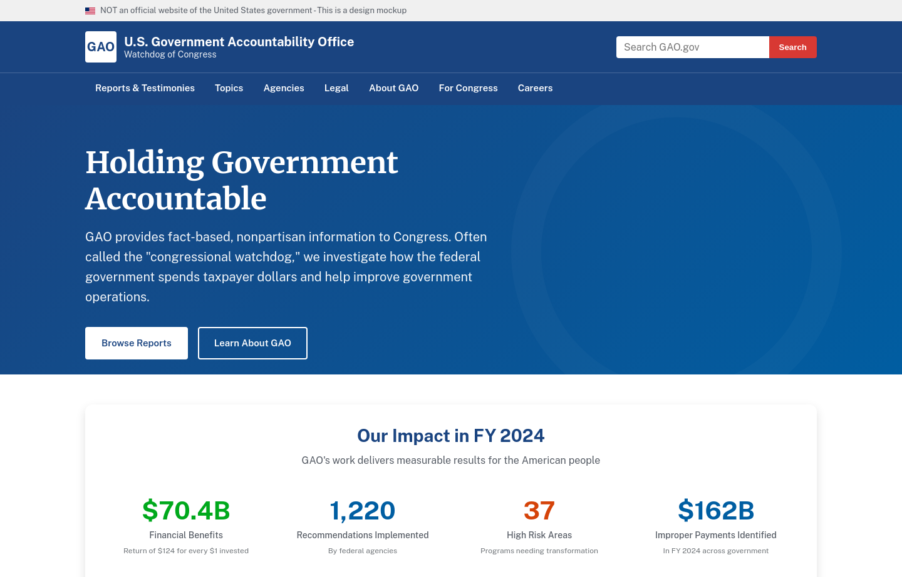
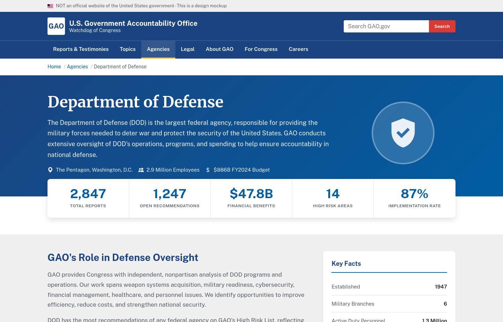
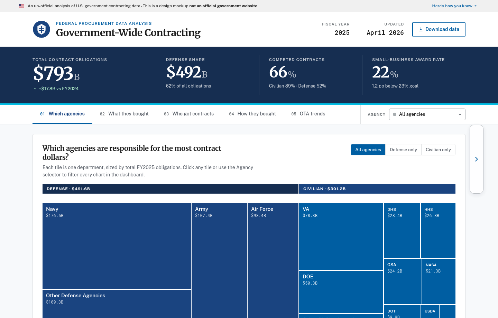
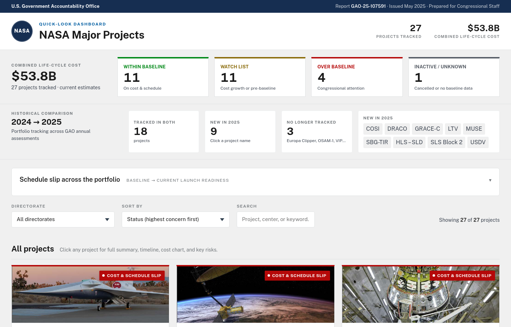

GAO Homepage Redesign
A refreshed homepage concept with a clearer public-facing value proposition, streamlined navigation, search, impact metrics, and report discovery paths.
Open mockupGAO concept gallery
A quick collection of static redesign concepts for GAO.gov, agency pages, federal contracting data, and NASA major projects oversight.
Each mockup is a standalone HTML prototype with a live link and a current screenshot preview.

A refreshed homepage concept with a clearer public-facing value proposition, streamlined navigation, search, impact metrics, and report discovery paths.
Open mockup
A GAO agency page concept focused on DoD oversight, surfacing key facts, reports, recommendations, high-risk areas, and financial benefits.
Open mockup
An interactive dashboard redesign for federal procurement data, including agency share, spending categories, vendors, competition, and OTA trends.
Open mockup
A dashboard prototype for scanning GAO's NASA major project portfolio, with project status, cost and schedule signals, historical tracking, and quick project cards.
Open mockup